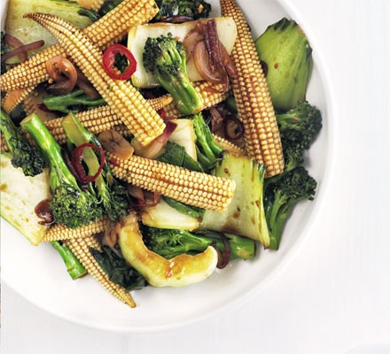

Stir-Fry Vegetables

Description
This is a quick and easy 10 minute stir fry recipe
It may optionally be served with chicken or fried fish
Ingredients
- 1 tbsp vegetable oil
- 1 red chilli, sliced (optional)
- 1 garlic clove, sliced
- 500g of mixed vegetables such as broccoli, pak choi and baby corn
- 1 1/2 tbsp soy sauce
- 2 tbsp sweet chilli sauce
Directions
- Heat the oil in a large frying pan or wok, then fry the chilli and garlic for 1 min.
- Add the veg and toss to coat in the oil. Fry for 2-3 mins, then add the soy and chilli sauce, mixing well.
- Cook for 2-3 mins more until the veg are tender.
Return